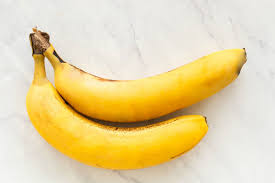
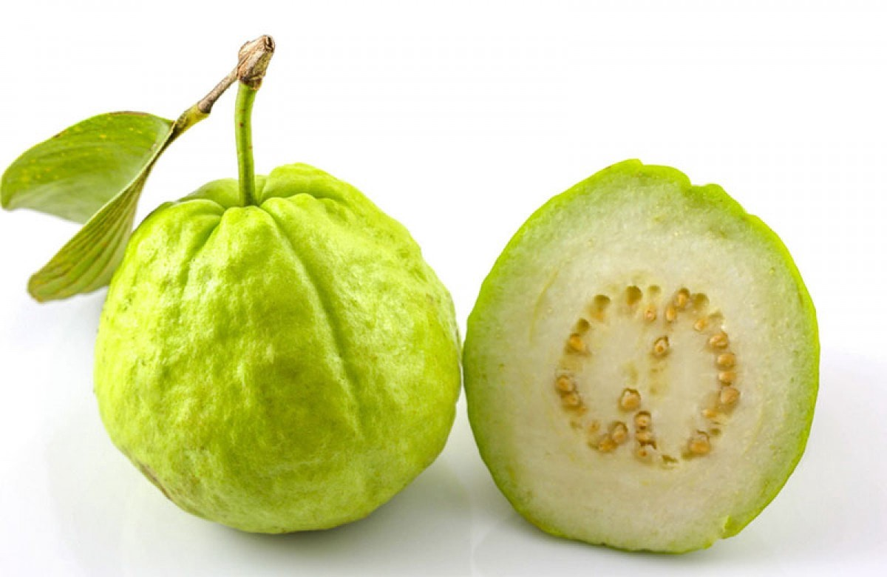
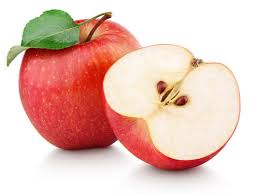
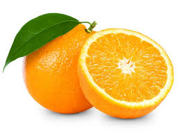
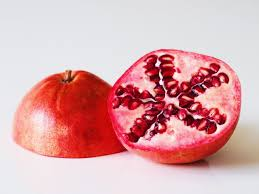
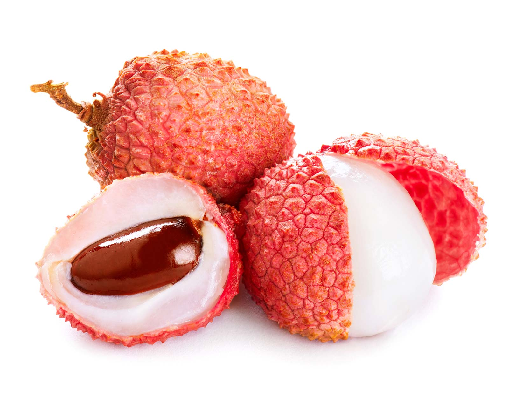
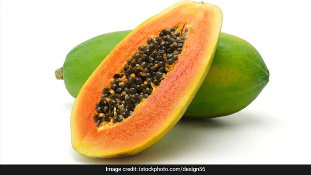
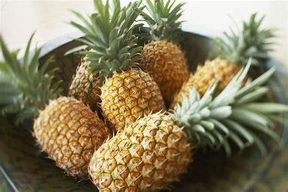

Major Fruits
Banana 
Soil required for the crop :- Deep, rich loamy soil with pH between 6.5 – 7.5 is most preferred for banana cultivation. Soil for bananas should have good drainage, adequate fertility and moisture. Saline solid, calcareous soils are not suitable for banana cultivation. A soil which is neither too acidic nor too alkaline, rich in organic material with high nitrogen content, adequate phosphorus level and plenty of potash is good for bananas.
Weather conditions & Temperature needed :- It prefers tropical humid lowlands and is grown from the sea level to an elevation of 2000m. above m.s.l.. In India this crop is being cultivated in climate ranging from humid tropical to dry mild subtropics through selection of appropriate varieties. 15ºC – 35ºC with relative humidity of 75-85%.
Rainfall needed :- average 650-750 mm. rainfall are most Largest Producing states :- Maharashtra, Tamil Nadu,Kerala
Largest Producing states :- Maharashtra, Tamil Nadu, Kerala.
Average selling price of crop :- 2266.00 INR/Quintal
MSP provided for the crop :- 2400 per/quintal
Guava 
Soil required for the crop :- Heavy clay to very light sandy soils having pH between 4.5-8.2 are suitable for cultivation of guava. Good quality guavas are produced in river basins. The crop is sensitive to water-logging.
Weather conditions & Temperature needed :- Guava is grown in both tropical and subtropical regions upto 1,500 m. above m.s.l. It is susceptible to severe frost as it can kill the young plants. It tolerates high temperatures and drought conditions prevalent in north India in summers.
Rainfall needed :- An annual rainfall of about 100 cm. is sufficient
Largest Producing states :- Uttar Pradesh, Bihar, West Bengal, Maharashtra, Chhattisgarh, Tamil Nadu, Karnataka, Madhya Pradesh, Gujarat and Andhra Pradesh.
Average selling price of crop :- ₹ 1,333/quintal
MSP provided for the crop :- ₹ 1,300/quintal
Apple 
Soil required for the crop :- Loamy soils, rich in organic matter with pH 5.5 to 6.5 and having proper drainage and aeration are suitable for cultivation.
Weather conditions & Temperature needed :- can be grown at altitudes 1,500-2,700 m. above m.s.l. in the Himalayan range which experience 1,000-1,500 hours of chilling . Areas exposed to high velocity of winds are not desirable for apple cultivation.
Rainfall needed :- For optimum growth and fruiting, apple trees need 100-125 cm. of annual rainfall, evenly distributed during the growing season.
Largest Producing states :- Jammu & Kashmir, Himachal Pradesh, Uttaranchal, Arunachal Pradesh and Nagaland
Average selling price of crop :- 7500/quintals
MSP provided for the crop :- 2000 per/quintal
Orange 
Soil required for the crop :- Mandarins can be grown in a wide variety of soils but medium or light loamy soils with slightly heavy sub-soil, well-drained with pH of 6.0-8.0 are ideal for cultivation.
Weather conditions & Temperature needed :- Mandarins grow successfully in all frost free tropical and sub-tropical regions upto 1,500 m. above m.s.l. Temperature ranging from 100-350 C
Rainfall needed :- An annual rainfall of 100-120 cm.
Largest Producing states :- Maharashtra, Madhya Pradesh, Tamil Nadu, Assam, Orissa, West Bengal, Rajasthan, Nagaland, Mizoram, Arunachal Pradesh.
MSP provided for the crop :- 4000 per quintal
Pomegranate 
Soil required for the crop :- Well drained, sandy loan to deep loamy or alluvial soils is suitable for cultivation.
Weather conditions & Temperature needed :- semi-arid conditions and can be grown upto an altitude of 500 m. above m.s.l.. The optimum temperature for the pomegranate is between 18-25°C,
Rainfall needed :- 500 and 800 mm.
Largest Producing states :- Pomegranate is cultivated commercially only in Maharashtra. Small scale plantations are also seen in Gujarat, Rajasthan, Karnataka, Tamil Nadu , Andhra Pradesh, Uttar Pradesh, Punjab and Haryana.
MSP provided for the crop :- 5000 per quintals
Litchi 
Soil required for the crop :- Deep, well drained loamy soil, rich in organic matter and having pH in the range of 5.0 to 7.0 is ideal for the crop.
Weather conditions & Temperature needed :- Litchi is a sub-tropical fruit and thrives best under moist sub-tropical climate. Frost during winter and dry heat in summer are limiting factors for its successful cultivation. The young trees require protection against frost and hot winds for several years till they are firmly established, even though some variation in temperature is necessary for proper fruiting of trees. The temperature should not go beyond 40.5 0C in summer and below freezing point in winter.
Rainfall needed :- The optimum rainfall level, according to the places where litchi is grown in India, varies between 1250 and 1500 mm
Largest Producing states :- In India, commercial cultivation was traditionally restricted to the north in the foothills of Himalayas from Tripura to Jammu & Kashmir and plains of Uttar Pradesh and Madhya Pradesh. However, with growing demand and viability of the crop, commercial cultivation has spread to several other states viz. Bihar, Jharkhand, Madhya Pradesh, Chhattisgarh etc.
MSP provided for the crop :- 4000 per quintals
Papaya 
Soil required for the crop :- Deep, well drained sandy loam soil is ideal for cultivation of papaya
Weather conditions & Temperature needed :- Papaya being a tropical fruit grows well in the mild subtropical regions of the country upto 1,000 m. above sea level.It is very much sensitive to frost, strong winds and water stagnation. Optimum temperature is 25 - 30° C and minimum 16° C
Rainfall needed :- The papaya is adapted to a wide range of rainfall conditions ranging from 35 cm to 250 cm annual precipitation.
Largest Producing states :- Andhra Pradesh, Karnataka, Gujarat, Orissa, West Bengal, Assam, Kerala, Madhya Pradesh and Maharashtra.
MSP provided for the crop :- 1600 per quintals
Pineapple 
Soil required for the crop :- Sandy loam soils with pH between 5.0-6.0 is ideal for the growth of the plants.
Weather conditions & Temperature needed :- Pineapple is suitable for cultivation in humid tropics. The fruit grows well near the sea coast as well as in the interior; so long the temperatures are not extreme. It can be grown upto 1,000 m. above sea level, if the area is frost free. The optimum temperature required for successful cultivation is 220-320 C. High temperature at night is deleterious for the growth of the plant and a difference of at least 40 C between day and night temperature is desirable.
Rainfall needed :- The rainfall requirement ranges between 100-150 cm.
Largest Producing states :- Assam, Meghalaya, Tripura, Manipur, West Bengal, Kerala, Karnataka and Goa. The other states where it is grown on a small scale are Gujarat, Maharashtra, Tamil Nadu, Andhra Pradesh, Orissa, Bihar and Uttar Pradesh.
MSP provided for the crop :- 1500 per quintal